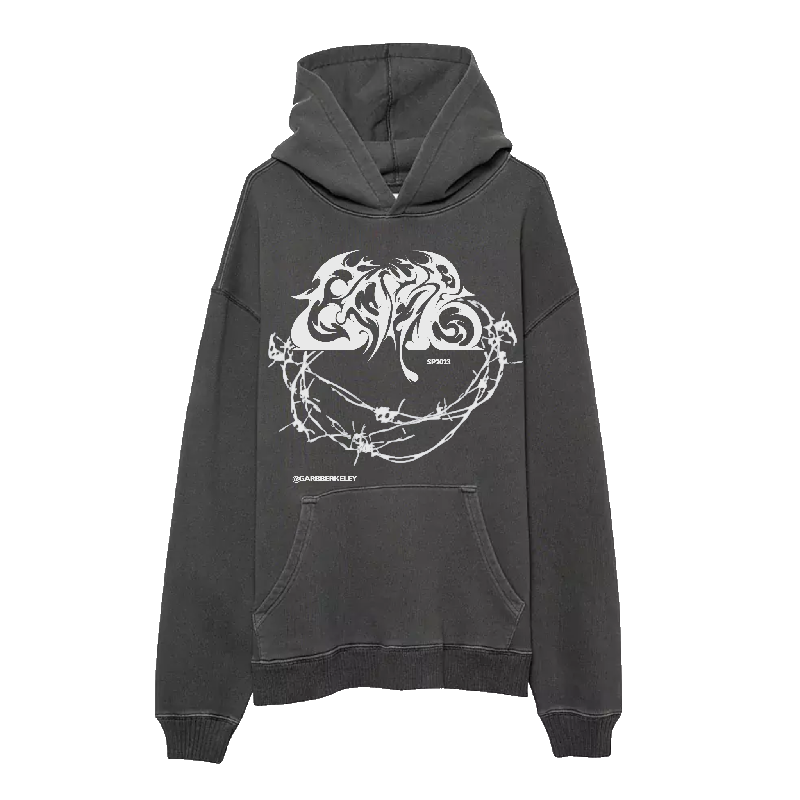
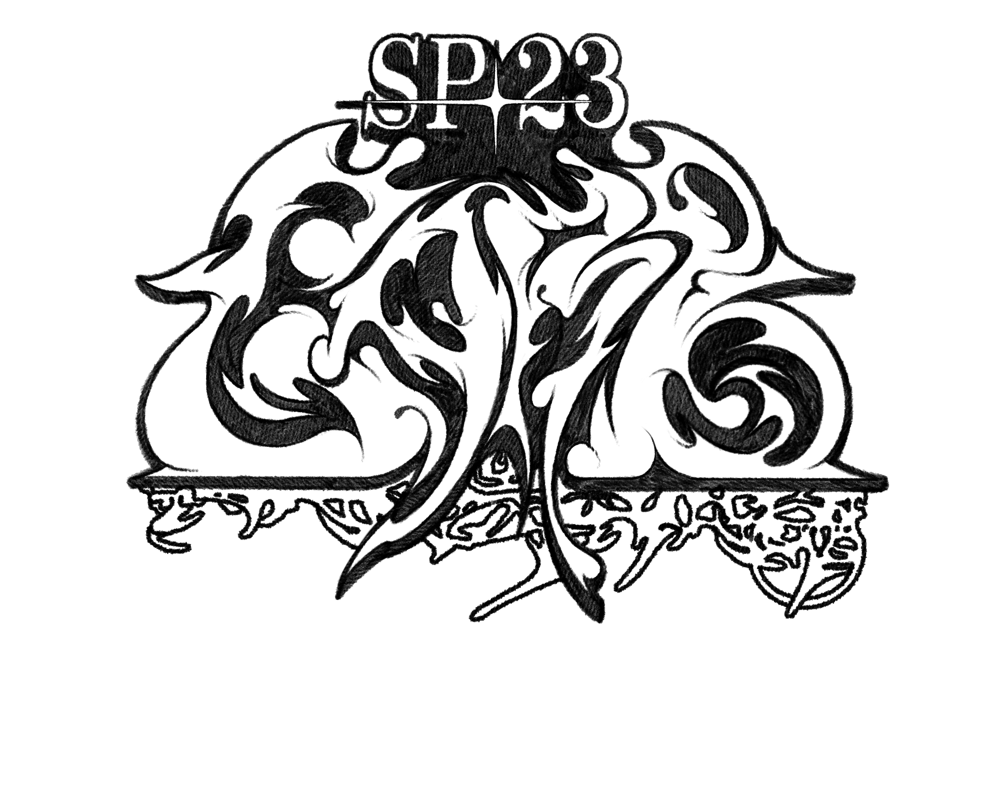
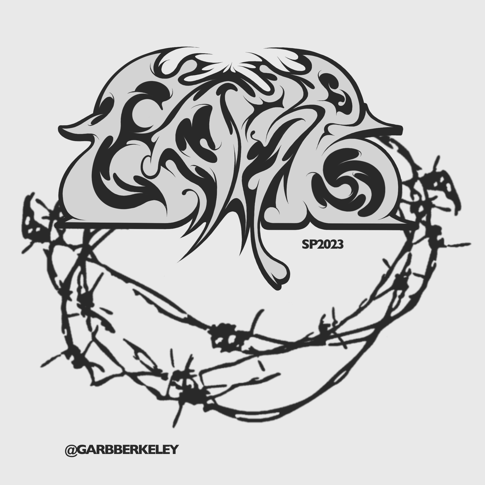
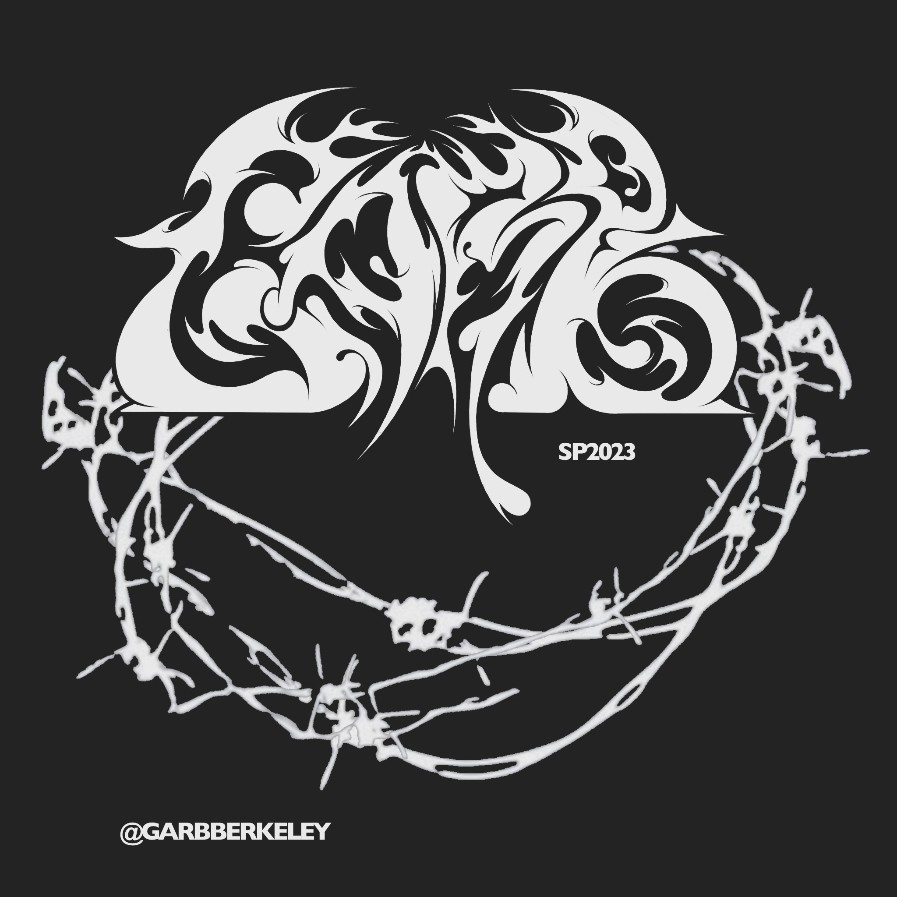

Garb Hoodie SP23
Member merch in cyber-sigilism and neo-tribal typography.
Garb is a student-run fashion and entertainment club at UC Berkeley that focuses on celebrating individualism and creative style. Tasked with creating member merchandise, I wanted to produce a striking, contemporary piece to showcase the spirit of the community.
Working with the four letters comprising the name of the club, this project allowed me to test the limits of creativity in custom typography. I focused on maintaining a delicate balance of positive and negative space, creating a visually interesting composition, and preserving a certain level of readability. The theme of the design was inspired by contemporary cyber sigilism and neo-tribal art.



